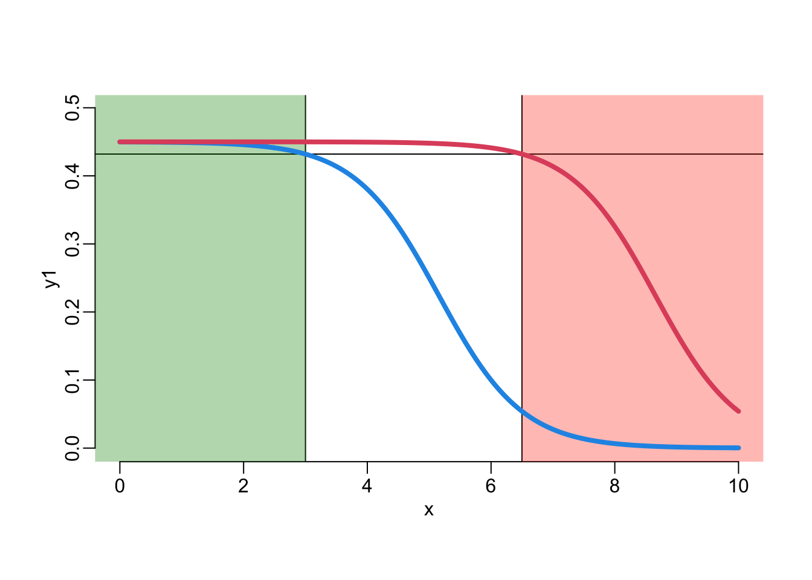
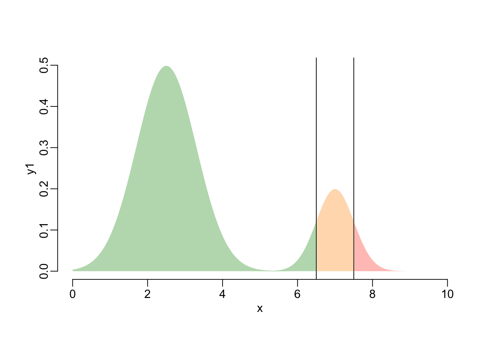
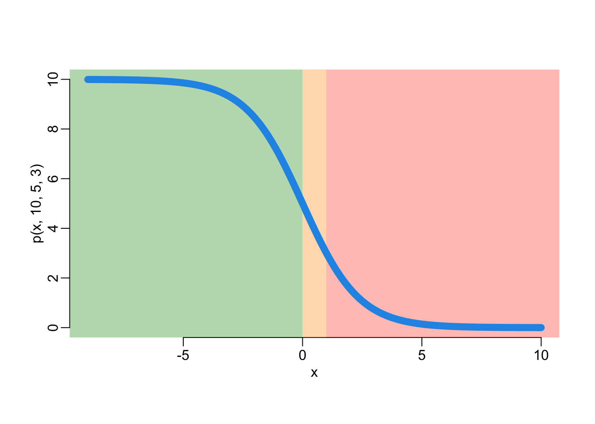
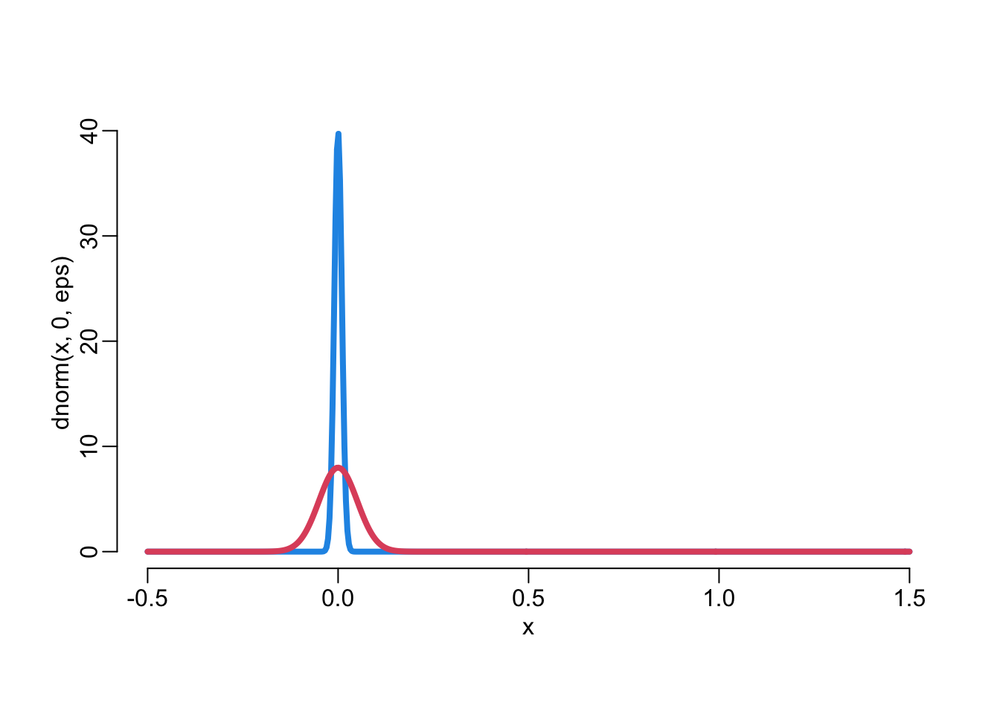
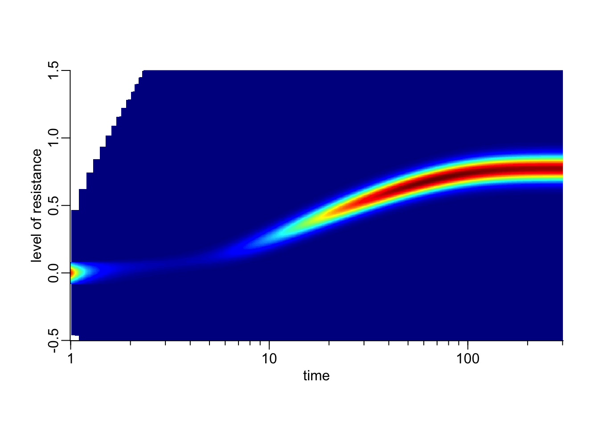
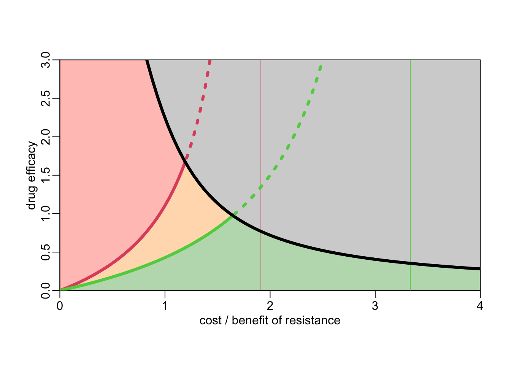

needed_packages <- c("dplyr",
"magrittr",
"plot3D",
"purrr")
to_install <- needed_packages[! needed_packages %in% installed.packages()[,"Package"]]
if (length(to_install)) install.packages(to_install)Quantitative AMR
Packages
Installing packages:
Loading packages:
library(dplyr)
library(purrr)Parameters and functions
Parameters:
lwd_val <- 4A few utility functions.
polygon2 <- function(...) polygon(..., border = NA)polygon3 <- function(x, y, col = 4, alpha = .2, ...) {
polygon2(c(x[1], x, tail(x, 1)), c(0, y, 0), col = adjustcolor(col, alpha))
}polygon4 <- function(x, y, ...) polygon2(c(x[1], x), c(tail(y, 1), y), ...)polygon5 <- function(x, y, ...) polygon2(c(tail(x, 1), x), c(y[1], y), ...)plotl <- function(..., lwd = lwd_val, col = 4) {
plot(..., type = "l", lwd = lwd, col = col)
}lines2 <- function(..., lwd = lwd_val, col = 2) lines(..., lwd = lwd, col = col)rgb2 <- function(...) rgb(..., alpha = 255 / 3, maxColorValue = 255)rect2 <- function(...) rect(..., border = NA)seq2 <- function(...) seq(..., le = 512)as_transposed_dataframe <- function(x) as.data.frame(t(as.data.frame(x)))log10Tck <- function(side, type) {
lim <- switch(side,
x = par("usr")[1:2],
y = par("usr")[3:4],
stop("side argument must be 'x' or 'y'"))
at <- floor(lim[1]):ceiling(lim[2])
switch(type,
minor = outer(1:9, 10^(min(at):max(at))),
major = 10^at,
stop("type argument must be 'major' or 'minor'"))
}axis_log <- function(side) {
side2 <- c("x", "y")[side]
at1 <- log10Tck(side2, "major")
at2 <- log10Tck(side2, "minor")
axis(side, log10(at1), at1, tcl = -.5)
axis(side, log10(at2), NA, tcl = -.25)
}plotllog <- function(..., log) {
plotl(..., axes = FALSE)
nonlog <- intersect(log, 1:2)
if (length(log) > 1) {
axis_log(1)
axis_log(2)
} else {
axis_log(log)
axis(setdiff(1:2, log))
}
}plotllog1 <- function(...) plotllog(..., log = 1)image2 <- function(...) {
image(..., axes = FALSE)
axis_log(1)
axis(2)
}approx2 <- function(...) {
approx(...) |>
as.data.frame() |>
na.exclude() |>
arrange(x)
}dnorm2 <- function(x, mean, sd, pr) {
distribution <- dnorm(x, mean, sd)
if (pr > 0) {
pr <- pr / 2
distribution[x < qnorm(pr, mean, sd) | qnorm(1 - pr, mean, sd) < x] <- 0
}
distribution / sum(distribution)
}Colors:
colS <- rgb2(8, 146, 6)
colI <- rgb2(255, 147, 1)
colR <- rgb2(255, 63, 30)A bimodal distribution
p <- function(x, pm, p0, p1) {
pm / (1 + ((pm - p0) / p0) * (p0 * (pm - p1) / (p1 * (pm - p0)))^x)
}
x <- seq2(0, 10)
y1 <- dnorm(x, 2.5, .8)
plot(x, y1, type = "n")
th1 <- 3
th2 <- 6.5
abline(v = th1)
abline(v = th2)
lines2(x, p(x - 5, .45, .25, .1), col = 4)
x <- seq2(0, 10)
y1 <- dnorm(x, 2.5, .8)
y2 <- dnorm(x, 7, .5)
plot(x, y1, type = "n")
polygon3(x, y1, col = "#4F9000", alpha = 1)
polygon3(x, .25 * y2)
x <- seq2(0, 10)
y1 <- dnorm(x, 2.5, .8)
y2 <- dnorm(x, 7, .5)
plot(x, y1, type = "n")
polygon3(x, y1)
polygon3(x, .25 * y2, colR, 1)
plot(x, y1, type = "n")
th1 <- 3
th2 <- 6.5
abline(v = th1)
abline(v = th2)
sel1 <- x < th1
sel2 <- x < th2
polygon3(x[sel1], y1[sel1], colS, 1)
polygon3(x[!sel1], y1[!sel1], colI, 1)
polygon3(x[sel2], .25 * y2[sel2], colI, 1)
polygon3(x[!sel2], .25 * y2[!sel2], colR, 1)
plot(x, y1, type = "n")
th1 <- 6.5
th2 <- 7.5
abline(v = th1)
abline(v = th2)
sel1 <- x < th1
sel2 <- x < th2
polygon3(x[sel1], y1[sel1], colS, 1)
polygon3(x[!sel1], y1[!sel1], colI, 1)
polygon3(x[sel1], .25 * y2[sel1], colS, 1)
polygon3(x[! sel1 & sel2], .25 * y2[! sel1 & sel2], colI, 1)
polygon3(x[!sel2], .25 * y2[!sel2], colR, 1)
A scale-free metric of resistance
\[ x = \frac{\log\left(\frac{\rm MIC}{\rm C_0}\right)}{\log\left(\frac{\rm C_1}{\rm C_0}\right)} \]
C0 <- 1
C1 <- 3
mic <- seq2(0, 10)
x <- log(mic / C0) / log(C1 / C0)
plotl(mic, x)
The MMNP model
\(b(t,y)\) is the density of bacteria with resistance level \(y\) at time \(t\) and \(B(t) = \int_\mathbb{R} b(t,y)dy\) is the total density of bacteria at time \(t\). The evolutionary dynamics is described by the following equation:
\[ \frac{\partial b}{\partial t} = \frac{1}{(1 + B(t))^\alpha}\int_\mathbb{R} J(x-y)p(y)b(t,y)dy - (\mu(x) + k(x))b(t,x) \]
The density-dependence looks like this:
x <- seq2(0, 100)
plot(NA, xlim = range(x), ylim = 0:1)
c(.1, .5, 1, 2) |>
map(~ 1 / (1 + x)^.x) |>
walk(~ lines2(x, .x, lwd = 8, col = 4))
x <- seq2(0, 10)
plotl(x, 1 / (1 + x), ylim = 0:1, lwd = 8)
The antimicrobial activity as a function of bacterial resistance can be expressed as:
\[ k(x) = k_0\left(\frac{k_1}{k_0}\right)^x \]
The corresponding R function reads:
k <- function(x, k0, k1) {
if (any(c(k0, k1) == 0)) return(rep(0, length(x)))
k0 * (k1 / k0)^x
}An illustration:
x <- seq2(-2, 4)
plotl(x, k(x, 5, 3))
rect2(-3, 0, 0, 15, col = colS)
rect2(0, 0, 1, 15, col = colI)
rect2(1, 0, 5, 15, col = colR)
lines(x, k(x, 5, 3), lwd = 8, col = 4)
The maximum bacterial growth rate as a function of bacterial resistance:
\[ p(x) = \frac{p_m}{1 + \frac{p_m - p_0}{p_0}\left(\frac{p_0}{p_1}\frac{p_m - p_1}{p_m - p_0}\right)^x} \]
The corresponding R function:
p <- function(x, pm, p0, p1) {
pm / (1 + ((pm - p0) / p0) * (p0 * (pm - p1) / (p1 * (pm - p0)))^x)
}An illustration:
x <- seq2(-9, 10)
plotl(x, p(x, 10, 5, 3))
rect2(-10, -1, 0, 11, col = colS)
rect2(0, -1, 1, 11, col = colI)
rect2(1, -1, 11, 11, col = colR)
lines2(x, p(x, 10, 5, 3), lwd = 8, col = 4)The basic reproduction ratio:
\[ \mathcal{R}_0(x) = \frac{p(x)}{\mu(x) + k(x)} \]
The corresponding R function:
R0 <- function(x, k0 = 3, k1 = .03, pm = 10, p0 = 9.5, p1 = 4.75, mu = .9) {
p(x, pm, p0, p1) / (mu + k(x, k0, k1))
}The invasion fitness of mutant \(y\) in a resident population \(x\):
\[ f_x(y) = \frac{\mathcal{R}_0(y) - \mathcal{R}_0(x)}{\mathcal{R}_0(x)} \]
The first derivative of R0:
\[ \frac{d\mathcal{R}_0}{dx} = \frac{k_0\log(1 + \theta)}{\left(\mu + \frac{k_0}{(1 + \theta)^x}\right)(1 + \theta)^x} - \frac{\left(\frac{p_m}{p_0} - 1\right)\log(\Delta)\Delta^x}{1 + \left(\frac{p_m}{p_0} - 1\right)\Delta^x} \] with
\[ \theta = \frac{k_0 - k_1}{k_1} > 0 \]
where \(\theta = 0\) means there is no fitness advantage provided by an increase in resistance level and
\[ \Delta = \frac{p_0}{p_1}\frac{p_m - p_1}{p_m - p_0} > 1 \]
where \(\Delta = 1\) means there is no cost of resistance.
A function that looks for the ESS:
R_evol_level <- function(k0, k1, p1, p0, pm, mu, interval = c(-10, 10), ...) {
Delta <- p0 * (pm - p1) / (p1 * (pm - p0))
Delta2 <- pm / p0 - 1
theta2 <- k1 / k0
derivative <- function(x) {
abs(log(k0 / k1) * k0 * theta2^x / (mu + k0 * theta2^x) -
Delta2 * log(Delta) * Delta^x / (1 + Delta2 * Delta^x))
}
optimize(derivative, interval = interval, ...)$minimum
}A function that plots the value of R0 with and without drugs:
plot_R0 <- function(k0 = 10, k1 = .1, pm = 10, p0 = 9.5, p1 = 4.75, mu = .95,
x = seq2(-1, 2)) {
R0_drug <- R0(x, k0, k1, pm, p0, p1, mu)
R0_nodrug <- R0(x, 0, 0, pm, p0, p1, mu)
xStar <- R_evol_level(k0, k1, p1, p0, pm, mu)
R0max <- max(R0_drug)
xmin <- min(x)
xmax <- max(x)
ymax <- 1.04 * max(R0_nodrug)
plot(x, R0_nodrug, ylim = c(0, ymax), type = "n", axes = FALSE, yaxs = "i",
xlab = "level of resistance", ylab = "R0")
rect2(xmin, 1, 0, ymax, col = colS)
rect2(0, 1, 1, ymax, col = colI)
rect2(1, 1, xmax, ymax, col = colR)
rect2(xmin, -1, xmax, 1, col = "lightgrey")
abline(h = 1, lwd = 4, lty = 3)
lines2(x, R0_drug)
lines2(x, R0_nodrug, col = 4)
segments(xStar, -1, xStar, R0max, col = 2)
segments(-1, R0max, xStar, R0max, col = 2)
points(xStar, R0max, cex = 1.5, pch = 19, col = 2)
points(min(x), max(R0_nodrug), cex = 1.5, pch = 19, col = 4)
axis(1); axis(2)
}plot_R0b <- function(k0 = 10, k1 = .1, pm = 10, p0 = 9.5, p1 = 4.75, mu = .95,
x = seq2(-1, 2)) {
R0_drug <- R0(x, k0, k1, pm, p0, p1, mu)
R0_nodrug <- R0(x, 0, 0, pm, p0, p1, mu)
xStar <- R_evol_level(k0, k1, p1, p0, pm, mu)
R0max <- max(R0_drug)
xmin <- min(x)
xmax <- max(x)
ymax <- 1.04 * max(R0_nodrug)
plot(x, R0_nodrug, ylim = c(0, ymax), type = "n", axes = FALSE, yaxs = "i",
xlab = "level of resistance", ylab = "R0")
rect2(xmin, 1, 0, ymax, col = colS)
rect2(0, 1, 1, ymax, col = colI)
rect2(1, 1, xmax, ymax, col = colR)
rect2(xmin, -1, xmax, 1, col = "lightgrey")
abline(h = 1, lwd = 4, lty = 3)
axis(1); axis(2)
}Plot of R0:
plot_R0()
drug <- 10^seq(-6, 4, le = 3 * 512)
x <- seq2(-1, 2)
fitness <- map(drug,
~ R0(x, k0 = .x * 10, k1 = .x * .1, pm = 10, p0 = 9.5, p1 = 4.75,
mu = .95))
xs <- x[map_int(fitness, which.max)]
ys <- map_dbl(fitness, max)plot_R0b()
#points(xs, ys, col = 1)
xout <- seq2(min(xs), max(xs))
out <- approx(xs, ys, xout)Warning in regularize.values(x, y, ties, missing(ties), na.rm = na.rm):
collapsing to unique 'x' valueswith(out, points(x, y))
A function that numerically integrates the integro-differential equation of the model:
simulatorR <- function(size0, x0, sigma0, pr, pm, p0, p1, k0, k1,
alpha, mu, eps, x, time) {
dt <- diff(time)
dx <- mean(diff(x))
ps <- p(x, pm, p0, p1)
ks <- k(x, k0, k1)
if (sigma0 > 0) {
mr_bact_pop <- size0 * dnorm2(x, x0, sigma0, pr)
} else {
x1 <- rev(seq(x0, min(x), - dx))
x2 <- seq(x0 + dx, max(x) + dx, dx)
x <- c(x1, x2)
mr_bact_pop <- c(rep(0, length(x1) - 1), size0, rep(0, length(x2)))
}
if (eps > 0) {
A <- 2 * eps^2
B <- sqrt(pi * A)
J <- as.matrix(as.data.frame(map(x, ~ exp(-(.x - x)^2 / A) / B)))
update_bact_pop <- function(bact_pop, pop_size, dt_val) {
L <- colSums(J * ps * bact_pop) * dx / (1 + pop_size)^alpha
(bact_pop + dt_val * L) / (1 + dt_val * (mu + ks))
}
} else {
update_bact_pop <- function(bact_pop, pop_size, dt_val) {
L <- ps * bact_pop / (1 + pop_size)^alpha
(bact_pop + dt_val * L) / (1 + dt_val * (mu + ks))
}
}
nb_t <- length(dt) + 1
bact_pop <- matrix(nrow = length(mr_bact_pop), ncol = nb_t)
bact_pop[, 1] <- mr_bact_pop
pop_size <- vector("numeric", nb_t)
pop_size[1] <- mr_pop_size <- sum(mr_bact_pop)
for (i in 2:nb_t) {
bact_pop[, i] <- mr_bact_pop <- update_bact_pop(mr_bact_pop,
mr_pop_size, dt[i - 1])
pop_size[i] <- mr_pop_size <- sum(mr_bact_pop)
}
bact_popNA <- bact_pop
bact_popNA[bact_popNA == 0] <- NA
list(bact_pop = bact_pop, bact_popNA = bact_popNA, pop_size = pop_size,
x = x, time = time,
param = c(size0 = size0,
x0 = x0,
sigma0 = sigma0,
pr = pr,
pm = pm,
p0 = p0,
p1 = p1,
k0 = k0,
k1 = k1,
alpha = alpha,
mu = mu,
eps = eps))
}The for-loop rewritten in C++:
#include <Rcpp.h>
using namespace Rcpp;
NumericMatrix Hadamard(NumericVector v, NumericMatrix m) {
unsigned int ncol = m.ncol();
unsigned int nrow = m.nrow();
NumericMatrix m2 (nrow, ncol);
for (unsigned int i = 0; i < ncol; i++) {
m2(_, i) = v * m(_, i);
}
return m2;
}
// [[Rcpp::export]]
List evolving1(double dx, double alpha, double mu, NumericMatrix J,
NumericVector ps, NumericVector dt_val, NumericVector ks,
NumericVector mr_bact_pop_in) {
int nt = dt_val.size() + 1;
int nx = ps.size();
double mr_pop_size;
NumericMatrix bact_pop (nx, nt);
NumericVector pop_size (nt);
NumericVector mr_bact_pop (nx);
mr_bact_pop = clone(mr_bact_pop_in);
bact_pop(_, 0) = mr_bact_pop;
mr_pop_size = sum(mr_bact_pop);
pop_size(0) = mr_pop_size;
for(int i = 1; i < nt; i++) {
mr_bact_pop = (mr_bact_pop + dt_val(i - 1) *
(colSums(Hadamard(ps * mr_bact_pop, J)) *
dx / pow(1.0 + mr_pop_size, alpha))) / (1.0 + dt_val(i - 1) * (mu + ks));
bact_pop(_, i) = mr_bact_pop;
mr_pop_size = sum(mr_bact_pop);
pop_size(i) = mr_pop_size;
}
return List::create(bact_pop, pop_size);
}
// [[Rcpp::export]]
List evolving2(double dx, double alpha, double mu,
NumericVector ps, NumericVector dt_val, NumericVector ks,
NumericVector mr_bact_pop_in) {
int nt = dt_val.size() + 1;
int nx = ps.size();
double mr_pop_size;
NumericMatrix bact_pop (nx, nt);
NumericVector pop_size (nt);
NumericVector mr_bact_pop (nx);
mr_bact_pop = clone(mr_bact_pop_in);
bact_pop(_, 0) = mr_bact_pop;
mr_pop_size = sum(mr_bact_pop);
pop_size(0) = mr_pop_size;
for(int i = 1; i < nt; i++) {
mr_bact_pop = (mr_bact_pop + dt_val(i - 1) *
(ps * mr_bact_pop / pow(1.0 + mr_pop_size, alpha))) /
(1.0 + dt_val(i - 1) * (mu + ks));
bact_pop(_, i) = mr_bact_pop;
mr_pop_size = sum(mr_bact_pop);
pop_size(i) = mr_pop_size;
}
return List::create(bact_pop, pop_size);
}The simulator using the for-loop written in C++:
simulatorCpp <- function(size0, x0, sigma0, pr, pm, p0, p1, k0, k1,
alpha, mu, eps, x, time) {
dt <- diff(time)
dx <- mean(diff(x))
ps <- p(x, pm, p0, p1)
ks <- k(x, k0, k1)
if (sigma0 > 0) {
mr_bact_pop <- size0 * dnorm2(x, x0, sigma0, pr)
} else {
x1 <- rev(seq(x0, min(x), - dx))
x2 <- seq(x0 + dx, max(x) + dx, dx)
x <- c(x1, x2)
mr_bact_pop <- c(rep(0, length(x1) - 1), size0, rep(0, length(x2)))
}
if (eps > 0) {
A <- 2 * eps^2
B <- sqrt(pi * A)
J <- as.matrix(as.data.frame(map(x, ~ exp(-(.x - x)^2 / A) / B)))
out <- evolving1(dx, alpha, mu, J, ps, dt, ks, mr_bact_pop)
} else {
out <- evolving2(dx, alpha, mu, ps, dt, ks, mr_bact_pop)
}
bact_popNA <- bact_pop <- out[[1]]
bact_popNA[bact_popNA == 0] <- NA
list(bact_pop = bact_pop, bact_popNA = bact_popNA, pop_size = out[[2]],
x = x, time = time,
param = c(size0 = size0,
x0 = x0,
sigma0 = sigma0,
pr = pr,
pm = pm,
p0 = p0,
p1 = p1,
k0 = k0,
k1 = k1,
alpha = alpha,
mu = mu,
eps = eps))
}Lets specify that we want to use the C++-based simulator for what follows:
simulator <- simulatorCppThe mean level of resistance:
\[ \eta(t) = \int_\mathbb{R} x\frac{b(t,x)}{B(t)}dx \]
A function that computes the mean resistance as a function of time:
mean_resistance <- function(out) {
with(out, bact_pop |>
as.data.frame() |>
purrr::map(magrittr::multiply_by, x) |>
purrr::map_dbl(sum) |>
magrittr::divide_by(pop_size))
}The variance of the resistance level:
\[ \sigma^2(t) = \int_\mathbb{R} (x - \eta(t))^2\frac{b(t,x)}{B(t)}dx \]
A function that computes the variance of resistance level as a function of time:
resistance_variance <- function(out) {
mean_res <- mean_resistance(out)
x2 <- map(mean_res, ~ (.x - out$x)^2)
with(out, bact_pop |>
as.data.frame() |>
purrr::map2(x2, magrittr::multiply_by) |>
purrr::map_dbl(sum) |>
magrittr::divide_by(pop_size))
}A function that log-transforms the time of a simulators output:
log_transform <- function(out) {
if (all(out$time > 0)) {
out$time <- log10(out$time)
} else {
out$time <- log10(out$time[-1])
out$pop_size <- out$pop_size[-1]
out$bact_pop <- out$bact_pop[, -1]
out$bact_popNA <- out$bact_popNA[, -1]
}
out
}A function that resamples time and/or x:
resample <- function(out, n_time, n_x = NULL) {
if (is.null(n_x)) n_x <- length(out$x)
bact_pop <- as.data.frame(t(out$bact_pop))
time <- out$time
x <- out$x
time2 <- out$time <- seq(min(time), max(time), le = n_time)
x2 <- out$x <- seq(min(x), max(x), le = n_x)
out$bact_pop <- bact_popNA <- bact_pop |>
map(~ approx(time, .x, time2)$y) |>
as_transposed_dataframe() |>
map(~ approx(x, .x, x2)$y) |>
as.data.frame() |>
t()
bact_popNA[bact_popNA == 0] <- NA
out$bact_popNA <- bact_popNA
out
}Solving one example (takes 7):
x <- seq2(-.5, 1.5)
time <- seq(1, 300, .1)
size0 <- 2.5
x0 <- 0
sigma0 <- .05
pr <- .1
k0 <- 10
k1 <- .1
pm <- 10
p0 <- 9.5
p1 <- 4.75
mu <- .95
alpha <- 1
eps <- .01
#eps <- .005
out <- simulator(size0, x0, sigma0, pr, pm, p0, p1, k0, k1, alpha, mu, eps, x, time)Looking at the initial distribution and the mutation kernel:
plotl(x, dnorm(x, 0, eps))
lines2(x, dnorm(x, x0, sigma0))
Log transforming time:
out2 <- log_transform(out)Resampling for the 2D plot:
out2D <- resample(out2, 512)Resampling for the 3D plot:
out3D <- resample(out2, 100)A 2D visualization (takes 0.5):
with(out2D, image2(time, x, bact_pop, bty = "o", col = plot3D::jet.col(),
xlab = "time", ylab = "level of resistance"))
with(out2D, image2(time, x, bact_popNA, bty = "o", col = plot3D::jet.col(),
xlab = "time", ylab = "level of resistance"))
A 3D visualization (takes 1):
with(out3D, plot3D::persp3D(time, x, bact_pop, theta = -45, phi = 15, r = 10 * sqrt(3),
expand = .6, box = FALSE, shade = 1, ltheta = -45,
alpha = 1, image = TRUE, zlim = c(-.1, .1),
colkey = list(side = 2,
length = .37,
width = .5,
dist = -.11,
shift = .13)))
Plotting the bacterial population size, the mean resistance, and the variance of resistance as a function of time:
opar <- par(mfrow = c(3, 1), plt = c(.15, .98, .24, .95), cex = 1)
with(out2, plotllog1(time, pop_size,
xlab = "time", ylab = "population size"))
plotllog1(out2$time, mean_resistance(out2),
xlab = "time", ylab = "mean level of resistance")
plotllog1(out2$time, resistance_variance(out2),
xlab = "time", ylab = "variance of resistance")
par(opar)Treatment outpout
The fitness cost-benefice of resistance:
\[ c_b = \frac{\log\Delta}{\log(1 + \theta)} \]
The corresponding R function:
cb <- function(p, k, mu) {
k * pm / ((mu + k) * (pm - p))
}The efficacy of the drug relative to the natural death rate of the bacteria (including everything (immune system, etc) but the drug):
\[ \frac{k(x)}{\mu(x)} \]
The corresponding R function:
k_mu <- function(cb, pm, mu) {
gamma <- pm * (1 - cb) / 2 - mu
(gamma + sqrt(gamma^2 + mu * (pm - mu))) / mu
}A function that prepares the data for figure 4:
figure4prepare <- function(pm, p0, p1, k0, k1, mu,
cb_max, veps, nb_mu_val, max_cv_val) {
mu_val <- seq(veps, nb_mu_val, veps)
cb_val <- seq2(0, max_cv_val)
cb0 <- cb(p0, k0, mu_val)
cb1 <- cb(p1, k1, mu_val)
y0 <- c(0, k0 / mu_val)
y1 <- c(0, k1 / mu_val)
cb0 <- c(0, cb0)
cb1 <- c(0, cb1)
cbs <- seq2(0, cb_max)
line_green <- approx2(cb0, y0, cbs)
line_red <- approx2(cb1, y1, cbs)
line_black <- approx2(cb_val, k_mu(cb_val, pm, mu), cbs)
Xintersect <- function(df) {
df |>
left_join(line_black, by = "x") |>
filter(y.x > y.y) |>
pull(x) |>
head(1)
}
list(line_green = line_green, line_red = line_red, line_black = line_black,
Xintersect0 = Xintersect(line_green), Xintersect1 = Xintersect(line_red))
}A function that plots figure 4:
figure4 <- function(pm, p0, p1, k0, k1, mu,
cb_max = 4, veps = .001, nb_mu_val = 1000, max_cv_val = 25, ...) {
plot(NA, xaxs = "i", yaxs = "i", bty = "o",
xlab = "cost / benefit of resistance", ylab = "drug efficacy", ...)
figure4prepare(pm, p0, p1, k0, k1, mu, cb_max, veps, nb_mu_val, max_cv_val) |>
with({
full_join(line_black, line_green, by = "x") |>
mutate(y = map2_dbl(y.x, y.y, min, na.rm = TRUE)) |>
with(polygon3(x, y, col = colS, alpha = 1))
polygon2(c(line_green$x, rev(line_red$x)), c(line_green$y, rev(line_red$y)),
col = colI)
with(line_red, polygon4(x, y, col = colR))
with(line_black, polygon5(x, y, col = "lightgrey"))
abline(v = 1 / c(1 - p1 / pm, 1 - p0 / pm), col = 2:3)
with(filter(line_red, x < Xintersect1), lines2(x, y))
with(filter(line_red, x > Xintersect1), lines2(x, y, lty = 3))
with(filter(line_green, x < Xintersect0), lines2(x, y, col = 3))
with(filter(line_green, x > Xintersect0), lines2(x, y, col = 3, lty = 3))
with(line_black, lines2(x, y, col = 1))
})
}An example of figure 4:
figure4(pm, p0 = 7, p1, k0, k1, mu, xlim = c(0, 4), ylim = c(0, 3))
Exploring the effect of mutation
subplots <- function(sim0, sim1) {
opar <- par(mfrow = c(3, 1), plt = c(.15, .98, .24, .95), cex = 1)
xs <- sim0$time
y1 <- sim0$pop_size
y2 <- sim1$pop_size
plotllog1(xs, y1, ylim = range(c(y1, y2)),
xlab = "time", ylab = "population size")
lines2(xs, y2)
y1 <- mean_resistance(sim0)
y2 <- mean_resistance(sim1)
plotllog1(xs, y1, ylim = range(c(y1, y2)),
xlab = "time", ylab = "mean level of resistance")
lines2(xs, y2)
y1 <- resistance_variance(sim0)
y2 <- resistance_variance(sim1)
plotllog1(xs, y1, ylim = range(c(y1, y2)),
xlab = "time", ylab = "variance of resistance")
lines2(xs, y2)
par(opar)
}Comparing with and without mutation:
sim1 <- simulator(size0, x0, sigma0, pr, pm, p0, p1, k0, k1, alpha, mu, 0, x, time) |>
log_transform()
subplots(out2, sim1)Exploring the effect of initial variability in absence of mutation
sim0 <- simulator(size0, x0, sigma0, pr, pm, p0, p1, k0, k1, alpha, mu, 0, x, time) |>
log_transform()
sim1 <- simulator(size0, x0, 0, pr, pm, p0, p1, k0, k1, alpha, mu, 0, x, time) |>
log_transform()
y1 <- sim0$pop_size
y2 <- sim1$pop_size
plotllog1(sim0$time, y1, yaxs = "i", ylim = c(0, max(c(y1, y2))),
xlab = "time", ylab = "population size")
lines2(sim1$time, y2)
Bacterial dynamics in absence of drug
Does not work:::
sim1 <- simulator(size0, x0, sigma0, pr, pm, p0, p1, 0, 0, alpha, mu, eps, x, time) |>
log_transform()
subplots(out2, sim1)
No drug, no mutation
Does not work:::
sim0 <- simulator(size0, x0, sigma0, pr, pm, p0, p1, k0, k1, alpha, mu, 0, x, time) |>
log_transform()
sim1 <- simulator(size0, x0, sigma0, pr, pm, p0, p1, 0, 0, alpha, mu, 0, x, time) |>
log_transform()
subplots(sim0, sim1)